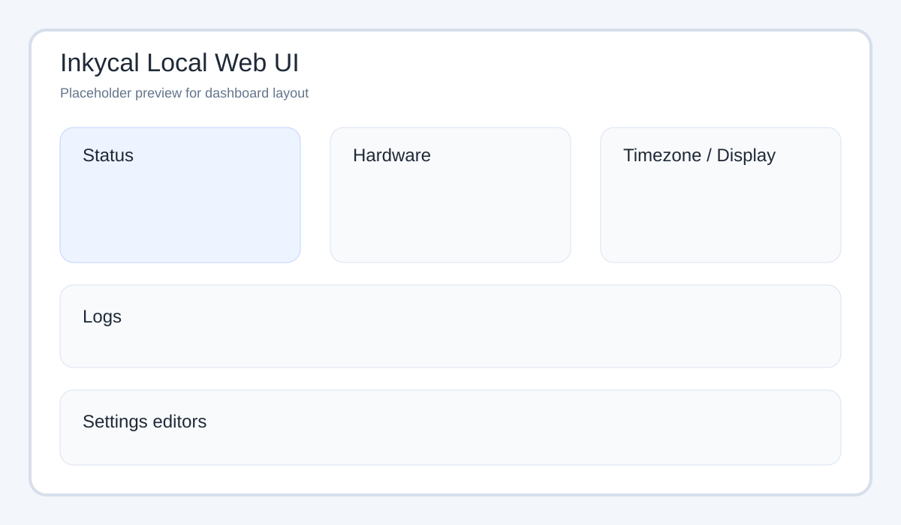
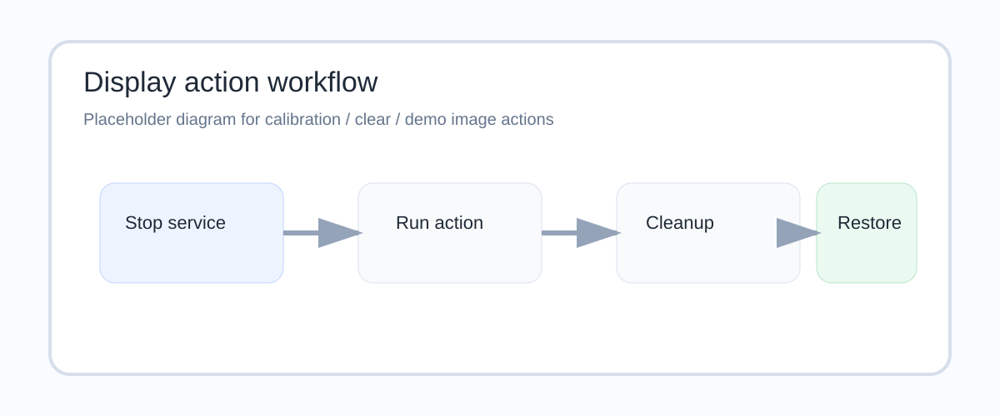

Local Web UI¶
The local web UI is a lightweight control panel for a running Inkycal device.
It is designed for phone and desktop browsers and runs separately from the main inkycal.service.

What it can do¶
The current local web UI supports:
- start, stop and restart the
inkycal.service - run a dry-run render without touching the display
- view recent log files
- auto-refresh hardware details while the page is open
- show host, platform, Python version, timezone, load, memory and uptime
- show the running Inkycal version in the status card
- update the system timezone
- switch Git branches from local branch list
- run
git pull --ff-onlyfrom the UI - inspect and edit
settings.json - edit settings as key/value fields with read-only keys
- show the currently selected display model from
settings.json - generate and display a PayPal QR code
- launch display actions:
- calibration
- clear
- show demo image
How it is started¶
The installer creates a dedicated systemd service:
inkycal-webui.service
That service runs inky_webui.py, which starts the lightweight HTTP server implemented in inkycal/webui.py.
Default address¶
By default the web UI listens on:
http://127.0.0.1:8080
Many users expose it on the Pi's local network through the installer-managed service configuration.
Important environment variables¶
| Variable | Purpose | Default |
|---|---|---|
INKYCAL_WEBUI_HOST |
Bind address | 127.0.0.1 |
INKYCAL_WEBUI_PORT |
HTTP port | 8080 |
INKYCAL_SERVICE_NAME |
Main service controlled by UI | inkycal.service |
INKYCAL_PYTHON_BIN |
Python interpreter used for actions | venv/bin/python |
INKYCAL_RUNNER |
Inkycal runner script | inky_run.py |
INKYCAL_SETTINGS_PATH |
Optional override for settings.json |
auto-detected |
INKYCAL_WEBUI_HW_REFRESH_SECONDS |
Hardware refresh interval | 10 |
Display actions¶

The display tools in the web UI are intentionally conservative:
- temporarily stop
inkycal.service - perform the selected display task
- restore the previous service state
Available actions:
- Run calibration – runs one display calibration cycle
- Clear – sends a white frame to the display
- Show demo image – downloads the Inkycal cover image, maps it through the image module path, and displays it with dithering disabled
The demo-image action uses a timeout-oriented workflow so it does not hang forever if something goes wrong on hardware.
Settings editing modes¶
The web UI currently exposes two editors:
1. Key/value editor¶
- read-only keys
- editable values
- useful for quick tweaks on mobile
2. Full JSON editor¶
- complete raw
settings.jsontext - useful for bulk edits and advanced structures
Included resource links¶
The interface also links to:
- the online settings generator
- InkycalOS-Lite
- the Discord support server
If you need help while changing settings or testing the display, you can also join the community directly here:
Notes and limitations¶
- The local web UI is intentionally simple and has no heavy frontend framework.
- Timezone changes and service actions may require
sudoprivileges depending on your system. - If a
sudoaction needs authentication, the UI opens a password modal and retries the same action with the provided password. - The UI edits the real
settings.json, so treat it as an admin interface on trusted networks.